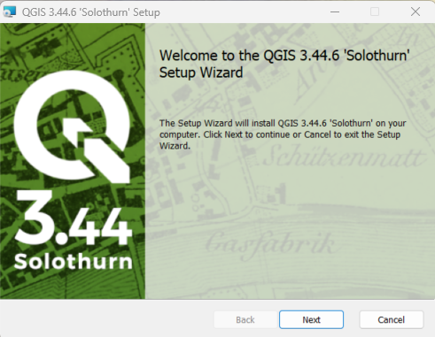
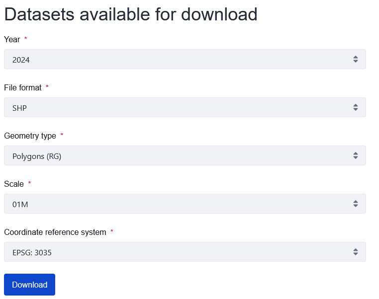
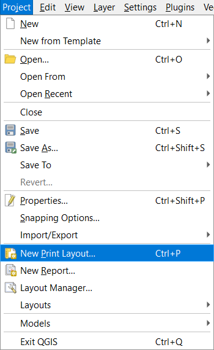
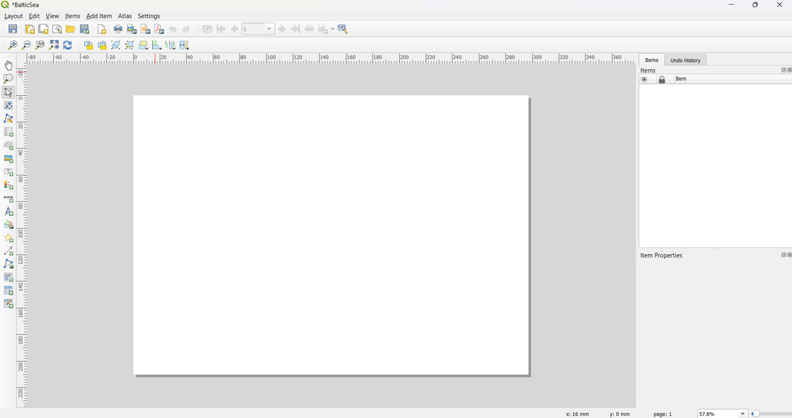

First steps in QGIS
In this blog post, we’ll explore how to install and start with QGIS.
Intro
In 2026, I plan to create content that helps users get started with QGIS, covering essential tools and workflows for everyday use.
Install
I will be working through this process while updating QGIS on my computer from version 3.28 to 3.44, the latest release.
To begin, we will start with the installation. Link to QGIS download.

Shapefile download
GISCO it’s the EU’s official source for consistent, high-quality geographic data.
GISCO (Geographical Information System of the COmmission) is the European Commission’s system for geographic data, providing standardized maps, administrative boundaries, and spatial datasets for all EU countries and regions, mainly to support statistics, policy-making, and geographic analysis. Link to GISCO.
Navigate to Data > GISCO (Geographical Information System of the Commission) > Geodata > Administrative Units > Countries.
Here, choose SHP as the data format and select the 01M scale.

Project
Once installed, in the top menu, select Project > New Project to start a new project.
To display the Layers Panel, go to View > Panels > Layers Panel.
To ensure that newly added layers are visible, enable the Manage Layers Toolbar by going to View > Toolbars > Manage Layers Toolbar.
To add layers, either click the Add Vector Layer icon on the toolbar or navigate to Layer > Add Layer.

Choose the appropriate directory and select the desired file.

At this point, the shapefile should be visible. Verify the EPSG code to confirm that the correct coordinate reference system is in use.

To export your map as a JPG, start by creating a print layout:
Navigate to Project > New Print Layout. A dialog box will appear. Assign a name to the layout, for this example, it is Baltic Sea.

A new window will open for the print layout. This is where you will design and prepare your map for export.

In the print layout, start by adding your map via Add Item > Add Map.
Next, zoom in to the area of interest, in this case, the Baltic Sea.
To re-position the map within the layout, use the Move Content tool, available as an icon on the toolbar or under Edit > Move Content.

Export
Once the layout is adjusted, you can proceed to export the map in your desired format.

Next post
In the next post, we will explore how to enhance your map by adding annotations, such as latitude and longitude markers, a scale bar, and the north arrow.